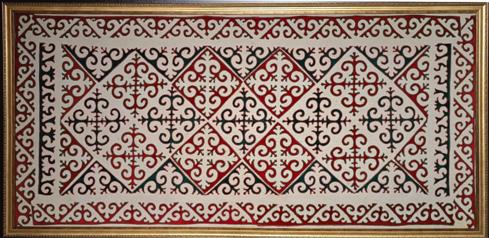
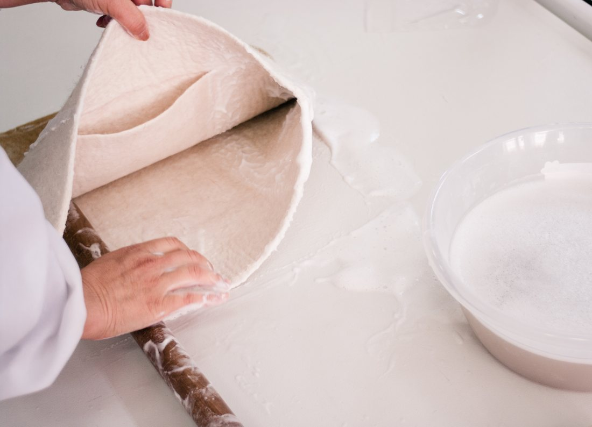
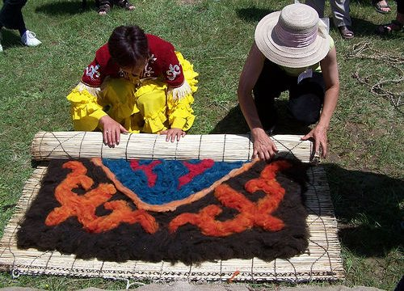
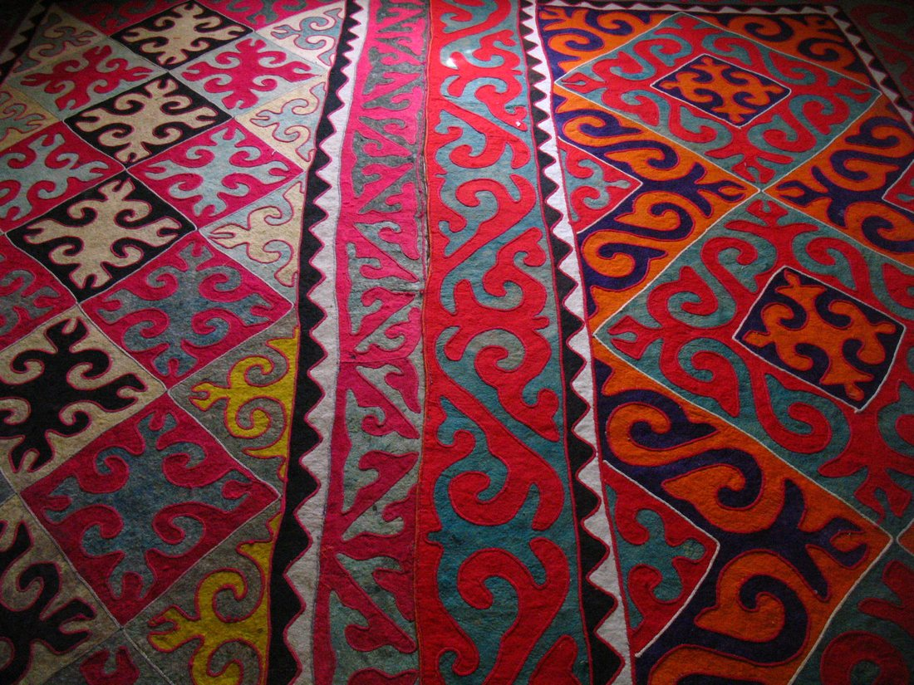
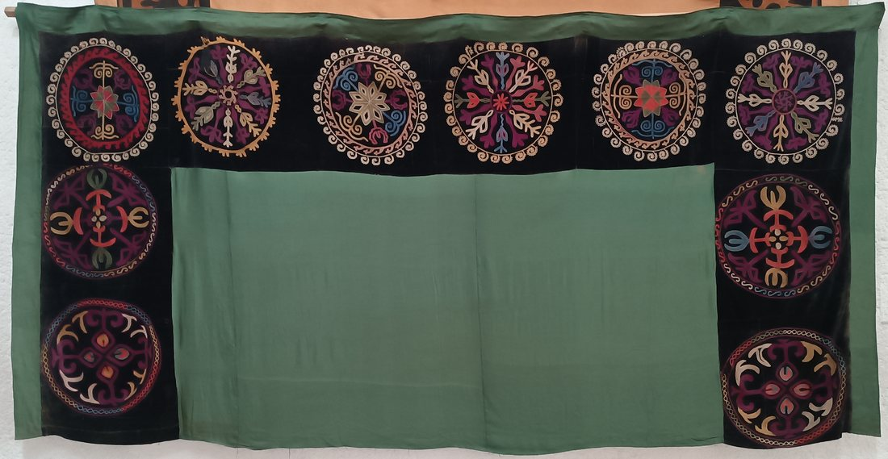
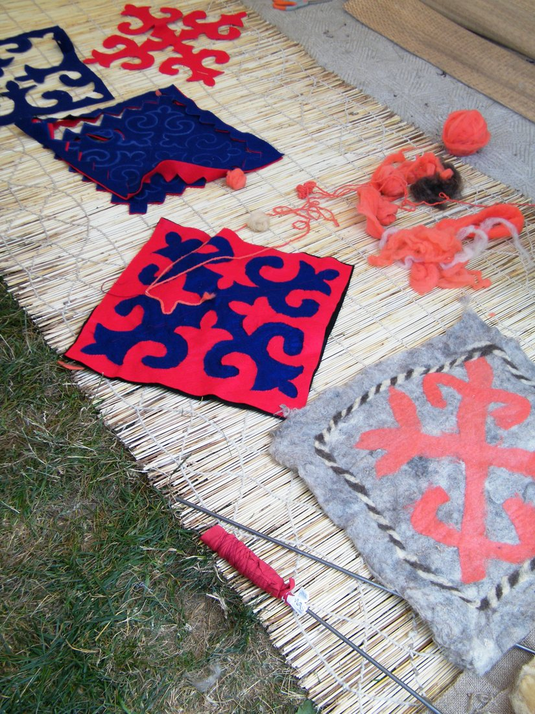
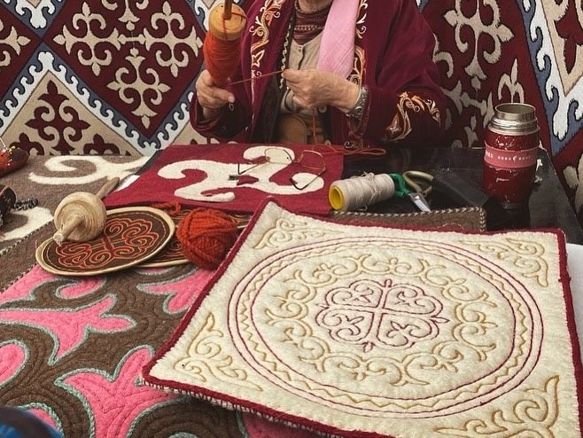

Көркем еңбек · 2-бөлім · Сәндік-қолданбалы өнер Art & Craft · Section 2 · Decorative & Applied Art Художественный труд · Раздел 2 · Декоративно-прикладное искусство
🧶 Киіз басу: текемет пен сырмақ
🧶 Felt-Making: Tekemet & Syrmak
🧶 Войлоковаляние: текемет и сырмак
Қойдың жүнінен жасалатын қазақтың дәстүрлі киіз кілемдері. The traditional Kazakh felt carpets made from sheep's wool. Традиционные казахские войлочные ковры из овечьей шерсти.
Киіз — көшпенділер мәдениетінің жүрегі Felt — the Heart of Nomadic Culture Войлок — сердце кочевой культуры
Киіз (войлок) — қойдың жүнін су мен сабынның көмегімен бастырып, талшықтарын біріктіру арқылы алынатын тоқылмаған мата. Тоқу да, тігу де емес — жай ғана басу. Дала көшпенділері үшін киіз таптырмас материал болды: одан киіз үйдің қабырғасын жапты, еденге кілем төседі, киім мен аяқкиім тікті. Жүн жылы әрі суды өткізбейді, сондықтан ыстық жаз бен қатал қыста бірдей қызмет етті. Felt (kiiz) is a non-woven fabric made by matting sheep's wool together with the help of water and soap. It is neither woven nor sewn — simply pressed. For the nomads of the steppe felt was an indispensable material: it covered the walls of the yurt, was spread on the floor as a carpet, and was made into clothes and footwear. Wool is warm and water-resistant, so it served equally well in the hot summer and the harsh winter. Войлок (киіз) — нетканый материал, который получают, сваливая (уплотняя) овечью шерсть с помощью воды и мыла. Его не ткут и не шьют — его просто валяют. Для кочевников степи войлок был незаменимым материалом: им покрывали стены юрты, стелили на пол как ковёр, шили из него одежду и обувь. Шерсть тёплая и не пропускает воду, поэтому одинаково служила и в жаркое лето, и в суровую зиму.
Қазақ халқында киіз кілемнің екі негізгі түрі бар: текемет — өрнегі киізге басылып кіргізілген жұмсақ кілем, және сырмақ — әртүсті киізді ою-өрнекке кесіп, құрап тігілген кілем. Екеуі де үй ішін әрлеп, жылулық пен жарасымдылық сыйлайды. Kazakhs have two main kinds of felt carpet: the tekemet — a soft carpet whose pattern is rolled and pressed into the felt, and the syrmak — a carpet made by cutting coloured felt into ornaments and sewing them together as a mosaic. Both adorn the home and bring warmth and harmony. У казахов есть два главных вида войлочного ковра: текемет — мягкий ковёр, узор которого вваливают (впрессовывают) в войлок, и сырмак — ковёр, собранный из вырезанных и сшитых между собой цветных войлочных деталей-орнаментов. Оба украшают жилище и дарят тепло и гармонию.

🔍 Сырмақ — Ұлттық музей қоры🔍 Syrmak — National Museum collection🔍 Сырмак — фонд Национального музея
Киізді қалай басады How Felt Is Made Как делают войлок
Дымқыл әдіспен басу (валяние) — 5 қадам. Wet-felting — 5 steps. Мокрое валяние — 5 шагов.
Жүнді түту.Carding the wool.Расчёсывание шерсти. Жуылған жүнді сабаппен сабап, түтіп, түйіршіктерден тазартып, жұмсақ әрі біркелкі етеді.The washed wool is beaten and teased apart, cleaned of lumps and made soft and even.Промытую шерсть взбивают, расчёсывают, очищают от комков, делая её мягкой и однородной.
Жаю (раскладка).Laying out.Раскладка. Жүнді шиге (қамыс төсенішке) жұқа қабаттармен, талшықтарын айқастыра жаяды. Текеметке боялған жүннен өрнек жаяды.The wool is spread on a reed mat (chiy) in thin layers with the fibres crossed. For a tekemet the pattern is laid out from dyed wool.Шерсть раскладывают на циновке из тростника (ши) тонкими слоями, перекрещивая волокна. Для текемета из крашеной шерсти выкладывают узор.
Сулау, сабындау.Wetting & soaping.Смачивание и мыло. Жүнді ыстық сумен сулап, сабын ерітіндісін құяды. Ылғал мен сабын талшықтарды бір-біріне жабысуға дайындайды.The wool is wetted with hot water and a soap solution is poured over it. Moisture and soap prepare the fibres to lock together.Шерсть смачивают горячей водой и поливают мыльным раствором. Влага и мыло готовят волокна к сцеплению.
Орау, басу (валяние).Rolling & fulling.Катание (валяние). Шиге орап, тізерлеп әрі қолмен ұзақ домалатады, басады. Үйкеліс пен қысымнан талшықтар бірігіп, мата тығыздалады.Rolled in the mat, it is rolled and pressed for a long time with the forearms and feet. Friction and pressure mat the fibres and the fabric becomes dense.Завернув в циновку, его долго катают и уминают руками и ногами. От трения и давления волокна сцепляются, и полотно уплотняется.
Шаю, кептіру.Rinsing & drying.Промывка и сушка. Дайын киізді сабыннан шайып, тегістеп жазып кептіреді. Содан соң текемет не сырмақ ретінде безендіреді.The finished felt is rinsed of soap, smoothed flat and dried. Then it is finished as a tekemet or a syrmak.Готовый войлок промывают от мыла, расправляют и сушат. Затем оформляют как текемет или сырмак.

сулау · сабындау · орауwetting · soaping · rollingсмачивание · мыло · катание

боялған жүннен өрнек жаюlaying out the dyed-wool patternвыкладка узора крашеной шерстью
Текемет пен сырмақ: салыстыру Tekemet vs Syrmak: a Comparison Текемет и сырмак: сравнение
Екеуі де киізден жасалады, бірақ техникасы мен өрнегі әртүрлі. Both are made of felt, but the technique and the ornament differ. Оба сделаны из войлока, но техника и орнамент у них разные.
| Признак | 🟤 Текемет | 🔴 Сырмак |
|---|---|---|
| Техника | Узор вваливают в войлок: крашеную шерсть выкладывают на циновку и сваливают вместе с фоном в одно полотно. | Узор вырезают и сшивают: два листа войлока разного цвета режут по одному контуру и сшивают мозаикой (метод «врезки»). |
| Фактура | Мягкий, толстый, цельный; узор и фон — одно полотно. | Плотный, ровный; швы простёганы цветным шнуром (жиек). |
| Край узора | Расплывчатый, мягкий — шерсть смешивается при валянии. | Чёткий, резкий контур мозаики. |
| Орнамент | Крупный, обобщённый: «қошқар мүйіз» (бараньи рога), волны. | Парный, зеркальный: фигура и фон меняются цветом (позитив/негатив). |
| Где используют | Напольный ковёр, подстилка, утепление пола юрты. | Парадный ковёр на стену и пол, приданое невесты. |
| Белгісі | 🟤 Текемет | 🔴 Сырмақ |
|---|---|---|
| Техникасы | Өрнекті киізге басып кіргізеді: боялған жүнді шиге жайып, фонмен бірге бір кілемге басады. | Өрнекті кесіп, тігеді: екі түрлі түсті киізді бір контурмен кесіп, мозаикадай құрап тігеді («ойып салу» тәсілі). |
| Фактурасы | Жұмсақ, қалың, тұтас; өрнек пен фон — бір кілем. | Тығыз, тегіс; жіктері түрлі-түсті жиекпен сырылған. |
| Өрнек шеті | Жайылыңқы, жұмсақ — басу кезінде жүн араласады. | Анық, өткір мозаика контуры. |
| Ою-өрнегі | Ірі, жинақы: «қошқар мүйіз», толқын. | Қос, айналы: пішін мен фон түсімен ауысады (оң/теріс). |
| Қолданысы | Еденге төсейтін кілем, төсеніш, киіз үй жылытқышы. | Қабырға мен төрге салатын салтанатты кілем, қыз жасауы. |
| Feature | 🟤 Tekemet | 🔴 Syrmak |
|---|---|---|
| Technique | The pattern is pressed into the felt: dyed wool is laid on the mat and felted together with the background into one sheet. | The pattern is cut and sewn: two felt sheets of different colour are cut along one outline and stitched together as a mosaic (inlay method). |
| Texture | Soft, thick, solid; pattern and ground are one sheet. | Dense, even; the seams are quilted with coloured cord (jiek). |
| Edge of motif | Blurred, soft — the wool blends during felting. | Sharp, crisp mosaic outline. |
| Ornament | Large, generalised: ram's horns (qoshqar muiz), waves. | Paired, mirrored: figure and ground swap colours (positive/negative). |
| Where used | Floor carpet, bedding, insulating the yurt floor. | Ceremonial carpet for wall and floor, a bride's dowry. |
Киіз бұйымдарының галереясы Gallery of Felt Items Галерея войлочных изделий
🔍 Үлкейту үшін суретті басыңыз. 🔍 Tap an image to enlarge it. 🔍 Нажмите на изображение, чтобы увеличить.




💬 Қорытынды 💬 In a nutshell 💬 Главное
Киіз — даланың жылуы мен сұлулығын біріктірген материал. Текеметте өрнек киізге басылып кіргізіледі, ал сырмақта ою-өрнек кесіліп, мозаикадай құралып тігіледі. Қарапайым жүннен халық шеберлерінің қолымен ою-өрнекке толы, жылы әрі берік кілемдер туады — олар бүгінге дейін қазақ үйін әрлеп тұр. Felt unites the warmth and the beauty of the steppe. In a tekemet the pattern is pressed into the felt, while in a syrmak the ornament is cut out and assembled as a mosaic. From plain wool the hands of folk masters create warm, durable carpets full of ornament — and they still adorn the Kazakh home today. Войлок соединяет тепло и красоту степи. В текемете узор впрессовывают в войлок, а в сырмаке орнамент вырезают и собирают мозаикой. Из простой шерсти руками народных мастеров рождаются тёплые, прочные ковры, полные орнамента, — и они до сих пор украшают казахский дом.